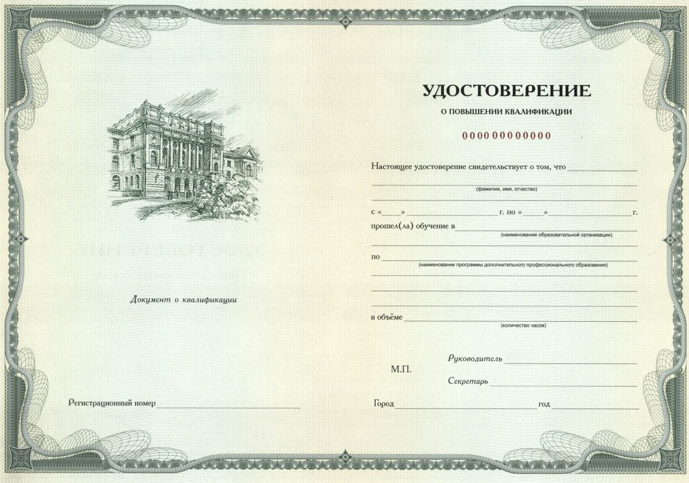

Инженерные программы для специалистов и предприятий
Повышение квалификации, тренажёры и онлайн-курсы от Передовой инженерной школы СПбПУ. Цена, формат и срок — сразу на карточке, без писем ради базовых вопросов.
Четыре шага — без анкет и заявок
Мы не собираем ваши данные на сайте. Вы сами выбираете программу и связываетесь с нами удобным способом.
Выбираете программу
Фильтр по направлению, формату и длительности. Отдельно — частным лицам и компаниям.
Видите все условия
Цена, срок, формат, итоговый документ и статус набора — открыто на странице программы.
Связываетесь с нами
Кнопка показывает почту и телефон. Пишете или звоните — заявку заполнять не нужно.
← этот шаг вместо формыУчитесь
Согласуем детали и формат. Онлайн-курсы стартуют сразу, без ожидания группы.
Программы дополнительного образования
Текст о центре ДПО — будет передан отдельно. Ниже — четыре типа продуктов, у каждого своё представление.
Учим на реальных производственных кейсах
Сценарии тренажёров и корпоративных программ собраны с реальных линий и процессов (обезличено). Найдите свою отрасль — покажем, какие потери разбираем и на какой эффект нацеливаем.
Симулятор не только учит — он измеряет
Каждое решение участника в тренажёре записывается. Из телеметрии складывается объективный профиль компетенций — без анкет, тестов и самооценок.
Профиль компетенций
6 осей из телеметрии: поток, качество, запасы, перепроизводство, ROI, финансы. Сравнение сотрудника со средним по когорте.
Зачёт по гейтам
Статус «Освоил» нельзя получить просмотром видео — только реальными действиями в тренажёре.
ИИ-диагност потерь
Алгоритм разбирает прохождение команды, находит потери против нормы и подсказывает, какую программу взять следующей.
Простой из-за ожидания логиста — доля 0,733 при норме 0,15. На эту причину приходится 350 831 из 478 849 единиц времени простоя: почти ¾ времени станки ждут подачу материалов.
Потеря типа «Ожидание / транспортировка»: не выстроена балансировка внутренней логистики.
Маршруты «молочника» (milk run): логист обходит участки по такту, материал приходит вовремя — простой падает кратно.
Команда против ИИ-оптимума
Диагност пересчитывает каждую неделю прохождения: сколько заработала команда и сколько было возможно при оптимальных решениях. Разрыв — цена необученности.
После обучения группы вы получаете отчёт, а не только удостоверения
- Зачёт по каждому сотруднику — кто освоил, кто в процессе, кто только ознакомился (по гейтам, не по посещаемости).
- Профили компетенций — сильные и слабые оси каждого участника из телеметрии тренажёра.
- Готовность к изменениям — кого ставить лидером проекта улучшений, кто сработает в команде.
- Рекомендации следующего шага — какие программы закроют слабые оси группы.
Удостоверение о повышении квалификации
Слушатели курсов повышения квалификации получают удостоверение установленного образца СПбПУ. У онлайн-курсов итоговый документ указан на карточке программы (удостоверение или сертификат).
Образец. Внешний вид документа может отличаться в зависимости от программы.

Частые вопросы
Сколько стоит обучение?+
Как записаться на программу?+
Можно оплатить обучение от организации?+
Чем онлайн-курс отличается от обычного?+
Что такое президентская программа?+
Свяжитесь с центром ДПО
Мы не собираем данные через формы. Напишите на почту или позвоните — ответим и подберём программу под вашу задачу.